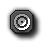

Main Actions - Set 1
This section deals with some of the main actions you will use when working with GameMaker:Studio.
The main action sets are full of the most important actions that you will need when working with GameMaker:Studio, and the first set, marked "main1" in the object properties tab, deals with instances,
sprites, sounds and moving from room to room.
Instances
 Create Instance
Create Instance
With this action you can create an instance of an object. You specify which
object to create and the position for the new instance. If you check the Relative box,
the position is relative to the position of the current instance. Creating
instances during the game is extremely useful. A space ship can create bullets;
a bomb can create an explosion, etc. In many games you will have some controller
object that from time to time creates monsters or other objects. For the newly
created instance the creation event is executed.
Create Moving
This action works the same as the action above but with two additional fields.
You can now also specify the speed and direction of the newly created instance.
Note that if you check the Relative box, only the position is relative,
not the speed and direction. For example, to make a bullet move in the direction
of the person shooting you have to use a little trick. As position use
0,0 and check Relative. As direction we need the current direction
of the instance. This can be obtained by typing in the word direction.
(This actually is a variable that always indicates the current direction
in which the instance is moving.)
 Create Random
Create Random
This action lets you create an instance of one out of four objects. You specify
the four objects and the position. An instance of one of these four objects
is created at the given position. If you check the Relative box,
the position is relative to the position of the current instance. If you need
a choice out of less than four objects you can use No Object for some of them.
This is for example useful to generate a random enemy at a location.
 Change Instance
Change Instance
With this action you can change the current instance into an instance of
another object. So for example, you can change an instance of a bomb into
an explosion. All settings, such as the motion and the value of variables,
will stay the same. You can indicate whether or not to perform the destroy
event for the current object and the creation event for the new object.
 Destroy Instance
Destroy Instance
With this action you destroy the current instance. The destroy event
for the instance is executed.
Destroy at Position
With this action you destroy all instances whose bounding box contains a
given position. This is useful, for example, when you use an exploding bomb.
When you check the Relative box the position is taken relative to
the position of the current instance.
Sprites
 Change Sprite
Change Sprite
Use this action to change the sprite for the instance. You indicate which new sprite.
You can also indicate with subimage must be shown. Normally you would use 0 for
this (the first subimage) unless you want to see a particular subimage. Use -1 if
you do not want to change the current subimage shown. Finally
you change the speed of the animation of the subimages. If you only want to see
a particular subimage, set the speed to 0. If the speed is larger than one
subimages will be skipped. If it is smaller than 1 subimages will be shown
multiple times. Don't use a negative speed. Changing sprites is an important feature.
For example, often you want to change the sprite of a character depending on
the direction in which it walks. This can be achieved by making different sprites
for each of the (four) directions. Within the keyboard events for the arrow keys
you set the direction of motion and the sprite.
 Transform Sprite
Transform Sprite
Use this action to change the size and orientation of the sprite for the instance.
Use the scale factors to make it larger or smaller. The angle gives the counter-clockwise
orientation of the sprite. For example, to make the sprite oriented in the direction of
motion use as a value direction. For example, this is useful for a car. You can also
indicate whether the sprite should be mirrored horizontally and/or flipped vertically.
Color Sprite
Normally the sprite is drawn as it is defined. Using this action you can change the
color of the sprite. This color is blended with the sprite, that is, it is combined
with the colors of the sprite. If you want to draw a sprite in different colors you
better define the sprite in black and white and use the blend color to set the
actual color. You can also indicate an alpha transparency. With a value of 1 the
sprite is opaque. With a value of 0 it is completely transparent. With a value in
between you will partially see the background shine through it. This is great for
making explosions.
Sounds
 Play Sound
Play Sound
With this action you play one of the sound resources you added to your game.
You can select the sound you want to play and choose whether it should play only once
(the default) or loop continuously. Multiple wave sounds can play at once but
only one midi sound can play at a time. So if you start a midi sound, the current midi
sound is stopped.
Stop Sound
This action stops the indicated sound. If multiple instances of this sound
are playing all are stopped.
Check Sound
If the indicated sound is playing the next action is performed. Otherwise
it is skipped. You can select Not to indicate that the next action
should be performed if the indicated sound is not playing. For example,
you can check whether some background music is playing and, if not, start
some new background music.
Note that this action returns true when the sound actually plays through the speakers. After you call the
action to play a sound it does not immediately reach the speakers so the action
might still return false for a while. Similar, when the sound is stopped you still hear
it for a while (e.g. because of echo) and the action will still return true.
Rooms
 Previous Room
Previous Room
Move to the previous room. You can indicate the type of transition effect
between the rooms. You should experiment to see what works best for you. When the rooms do
not have the same size you better do not use transitions.
If you are in the first room you get an error.
 Next Room
Next Room
Move to the next room. You can indicate the transition.
 Restart Room
Restart Room
The current room is restarted. You indicate the transition effect.
 Different Room
Different Room
With this action you can go to a particular room. You indicate the room and the
transition effect.
Check Previous
This action tests whether the previous room exists. If so, the next action
is executed. You normally need this test before moving to the previous room.
Check Next
This action tests whether the next room exists. If so, the next action
is executed. You normally need this test before moving to the next room.